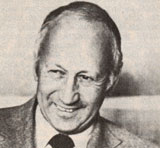

Newsworthies
Norman cousins, book 'Anatomy of an Illness.'; Steven D. Jellinek, 'biorational' methods are used as part of integrated pest management; Karl Hess, in his book 'Community Technology' he describes an experiment in self sufficiency; Bill Alexander; Bill Shurcliff; Senator Gary Hart; Garrett Hardin; and Stevie Wonder.
By the Mother Earth News editors
March/April 1980
Selected doin's of well-known MOTHER-types from around the world.
NORMAN COUSINS
In 1984 Norman Cousins, editor of the Saturday Review, became ill. His body ached, he began to have trouble moving his limbs, and gravel-like deposits appeared under his skin. Cousins sought out medical opinion, but-aside from a general diagnosis of a collagen disorder no specific explanation or course of treatment could be found . . . his sickness was "incurable".
Cousins was not willing to accept a passive victim's role, however. With the aid of his physician, the journalist put together a personal course of treatment that involved massive doses of vitamin C . . . and equally large injections of laughter. Cousins found that watching a Marx brothers' movie so relaxed him and so effectively anesthetized his pain-that he was able to sleep without the aid of drugs.
The editor eventually cured himself of his ailment . . . though it's impossible to tell whether the remission of his symptoms was brought about by a placebo effect or by the vitamin and laughter therapy (or a combination of the two). What is important is that Cousins' attitude that of a combatant armed with positive emotions and a strong will to live-played a major role in his recovery. You can read the inspiring story in Anatomy of an Illness (W.W. Norton, 1979, $9.95). It's a book that has important implications for every aspect of the wholistic movement in medicine! -PH.
STEVEN D.JELLINEK
Occasionally supporters of integrated pest management like the late Dr. Robert van den Bosch (subject of the Plowboy Interview in MOTHER NO. 58) must feel like the prophets of old . . . voices crying in the wilderness.
But there's some good news for folks interested in treading softly on the earth, and it comes-surprisingly enough from Washington, D.C.! Under the supervision of Assistant Administrator Steven D. Jellinek, the Environmental Protection Agency has recently approved a number of wholistic insect controls. "These 'bio-rational' methods," says Jellinek, "including insect viruses, bacteria, and artificial hormones, are environmentally desirable because they curb specific pests without killing beneficial insects or harming people and wildlife."
The latest bio-rational controls to be approved by the EPA are pheromones-or sex-attracting s cents-of the gypsy moth and the cotton boll weevil. The manmade duplicates of the chemicals emitted by female insects are used in two ways: The gypsy moth scent is distributed throughout the infested area, confusing the males so that mating cannot take place . . . while the boll weevil odor is used to bait a simple trap. In each case, the newly approved controls are expected to displace large quantities of potentially toxic insecticides.
There's more good news, too. According to Jellinek, the EPA recognized that the bio-rational controls are inherently different from the toxic chemicals, and agreed to take the differences into account when testing the pest controls. In fact, Jellinek's department intends to facilitate the registration of bio-rational pesticides as alternatives to conventional pesticides . . . by assuring that the requirements for registration are not unduly burdensome. Bio-rational pesticides -as a matter of policy-will be given priority in the registration process, and the EPA will "vigorously encourage the demonstration of the practical value and safety" of the new controls. It appears that the long fight for a rational pesticide policy is finally bearing (unpoisoned) fruit! -PH.
KARL HESS
From speechwriter for Barry Goldwater . . . to writer, welder, tax-resister, and barterer . . . to theorist and practitioner of decentralization: Karl Hess (subject of the Plowboy Interview in MOTHER NO. 37) has traveled a long road in the last 15 years.
In his new book, Community Technolo gy (Harper & Row, 1979, $7.95), Hess describes an experiment in self-sufficiency that took place in his largely poor, largely black Washington, D.C. neighborhood. It seems that Hess and a group of local residents set up urban hydroponic gardens, developed a flourishing cellar trout farm, introduced composting toilets, and -finally saw their noble venture fail. They didn't run into trouble because self-sufficiency was an unobtainable ideal, however . . . in fact, most of the trial pro grams succeeded very well. What brought Hess's experiment in community technology to an end was the competition from the society around him that encourages dependency . . . a society that convinced neighborhood people they deserved no less (and no more) than a dignity-robbing handout . . . and that rewarded theorizing rather than sweat and effort.
But Hess-despite defeat-doesn't despair. He feels that the big problems of big government can be solved by decentralization and self-determination: "Today's great opportunity is that any community-any community-can, with access to enough knowledge, develop a technology that's perfectly appropriate to its needs and, moreover, perfectly appropriate to its resources." Looking back over his neighborhood experience in Washington, Hess seems to connect the failure of the project to the fact that the whole community never was involved: "If the culture of poverty is to be broken in any black neighborhood it will be broken by black people, not by starry-eyed whites talking soul patter." Community Technology is an important, realistic look at the problems and promise! -of self -sufficiency.-PH.
IN BRIEF . . .
Representative BILL ALEXANDER (D., Ark.) is chairman of the board of the Mid-South Energy Project, an educational group dedicated to the promotion of alternate technologies .... BILL SHURCLIFF's latest energy-saving book is Thermal Shutters rind Shades (Dept. TMEN, Brick House Publishing, 3 Main Street, Andover, Massachusetts 01810 . . . $12 in paperback and $18 in cloth, plus $1.00 shipping).... Senator GARY HART (D., Colo.) has proposed a bill that will end the construction of all nuclear power plants by 1985 if an adequate burial site for high-level waste hasn't been found, and-for each year after 1992 that such a site isn't available-the industry would have to drop nuke power output by 10% . . . . GARRETT HARDIN (subject of the Plowboy Interview in MOTHER NO. 57) and the other directors of the Environmental Fund have announced that the world population growth rate for 1979 was between 1.8% and 2.2% (depending upon which estimate of the Mexican and Chinese population increases you accept) .... STEVIE WONDER has composed the score for a new movie based on The Secret Life of Plants. -PH.
|
 |
 |
|